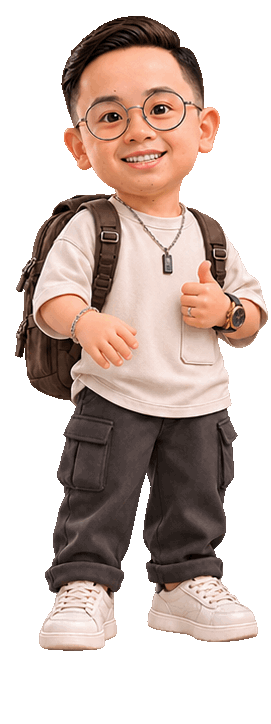
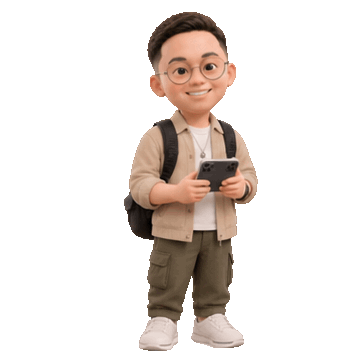

Hello, I'm Kevin.
從好奇開始，慢慢找到自己的方向。
Hi～我是 Kevin。
我喜歡探索新事物，也習慣在過程中觀察、思考，慢慢認識自己。
遇到感興趣的事情，我通常會先試試看，再決定是否深入了解。對我來說，每一次嘗試都是新的經驗，也讓我更清楚自己喜歡什麼、想往哪裡前進。
工作與生活，是我探索世界的兩種方式。
歡迎來到我的小小數位世界，跟著 MINI ME，一起認識不同面向的我。

Stay Curious. Keep Exploring. — 每一次嘗試，都是認識自己的過程。
從好奇開始，慢慢找到自己的方向。
Hi～我是 Kevin。
我喜歡探索新事物，也習慣在過程中觀察、思考，慢慢認識自己。
遇到感興趣的事情，我通常會先試試看，再決定是否深入了解。對我來說，每一次嘗試都是新的經驗，也讓我更清楚自己喜歡什麼、想往哪裡前進。
在工作中累積經驗，也發現自己的興趣。
畢業後，我進入華泰文化，展開第一份正式工作。
從商品資料、價格、庫存與訂單管理開始，逐漸接觸網路書店、電子書與數位教材，也開始學習整合不同部門的需求與工作流程。
隨著參與的工作越來越多，我發現自己不只在意任務是否完成，更喜歡從數據中找線索、理解使用者遇到的問題，再和團隊一起討論能實際執行的改善方式。
這些經驗不只累積了工作能力，也讓我逐漸找到感興趣的方向。
工作以外，依然保持好奇。
生活中的我，喜歡用攝影記錄日常。
有時只是隨手拍下一個畫面，有時則會嘗試不同的 AI 工具、影音剪輯或創作方式。
我不一定會把每個興趣都發展成專長，但很享受從零開始接觸新事物的過程。
攝影讓我更留意身邊的細節，創作讓我嘗試不同的表達方式，而持續學習則帶來更多新的可能。
帶著累積的經驗，繼續向外探索。
過去的工作與生活，讓我逐漸認識自己的興趣，也累積了分析問題、整合需求、協調合作與推進執行的能力。
現在的我，希望帶著這些經驗，繼續接觸不同的產業、產品與團隊，學習新的事物，也創造實際的價值。
我相信，每一次探索都有它的意義。
Carpe Diem！
保持好奇，把握當下，在每一次嘗試中繼續成長。
Choose Your Path — 想先認識哪一面的我？
工作與生活，是我持續探索的兩種方式。
Work Me｜工作的我：看看我如何從問題出發，透過分析、規劃與團隊合作，把想法逐步轉化為成果。
Life Me｜生活中的我：一起探索那些讓我保持好奇的日常片段，從手機攝影到各種有趣的創作嘗試。
可自由切換四個章節；故事不需要讀完，隨時都能前往 Work Me 或 Life Me。
你想先認識哪一面的我？選一條路開始，也可以隨時切換。
我喜歡從資料與使用者的角度理解問題，和不同夥伴一起找到能實際推進的做法。
在華泰文化行銷管理組任職期間，我的工作逐漸從日常營運延伸到網路書店、電子書及數位產品相關業務。比起單純完成眼前任務，我更重視理解問題、整理資訊，以及與團隊合作找到可執行的解決方法。
數據分析 × 行銷策略
從銷售資料觀察消費行為，參與活動規劃與成效追蹤。
數位產品 × 需求整合
參與中文電子書從 0 到 1 的建置，並串接實際營運流程。
流程改善 × 跨部門協作
整理作業情境、協助測試自動化，並建立標準作業流程。
三個真實專案，三種從問題走向行動的方式。
先從卡片看重點，再選擇想深入了解的案例。每個專案都會區分我的實際工作與團隊共同成果。
Data-Driven Marketing · Campaign Planning
為提高網路書店訂單量及商城能見度，透過銷售數據與消費行為分析，規劃行銷活動及促銷機制。
從定期銷售分析中觀察消費者行為，參與活動策略與促銷機制規劃，並負責 EDM、APP 推播、首頁視覺及活動文案等行銷素材製作。
在其中一次參與規劃與執行的行銷活動中，活動成效追蹤顯示：
上述為該次活動的代表性成果，並非每次活動的固定成效，也不是百分點增幅。成果來自活動策略、行銷執行及團隊共同協作。
銷售分析／行銷活動規劃／行銷素材設計／成效追蹤
Digital Product Development & Operations
隨著數位教材業務發展，公司逐步建立中文電子書產品服務。除了產品功能建置，也需要確立從贈書、銷售到發送的整體營運流程，讓相關部門與業務人員能夠順利使用及推廣產品。
我主要負責原文與中文電子書營運，並深度參與中文電子書產品從 0 到 1 的建置歷程。由於參與中文電子書多數建置及營運環節，除了產品需求整理與測試協調，也負責確立相關作業流程，並協助內部業務人員熟悉產品操作。
參與市場競品研究、產品功能需求整理、測試協調、合作夥伴對接及網路商城專頁規劃，協助中文電子書產品逐步完成建置。
針對中文電子書的贈書、銷售及發送等業務情境，整理並確立整體作業流程，讓不同環節具備明確的操作方式與執行依據。
基於對中文電子書建置及營運流程的熟悉程度，曾準備並進行一場小型內部教育訓練，協助公司業務人員理解中文電子書的作業流程及系統操作畫面。
為了讓教育訓練不只是單向講解，我嘗試運用 AI 製作小型互動式網站，作為中文電子書教育訓練的輔助工具，希望透過互動方式加強學習連結與參與者的專注力。
深度參與中文電子書產品從建置到實際營運的過程，確立從贈書、銷售到發送的相關作業流程，並透過內部教育訓練協助業務人員熟悉產品操作。同時，將 AI 工具應用於實際教育訓練情境，嘗試以互動式網站輔助資訊傳達，探索更具參與感的學習方式。
數位產品營運／需求整合／流程規劃／跨部門協作／教育訓練／AI 工具應用
Process Improvement & Operations
數位商品的訂單履約涉及序號備貨、發送及售後支援等環節。原先部分作業需要人工處理，隨著營運需求增加，公司逐步推動序號自動派發流程，以減少一般寄送情境中的人工操作需求。
由於熟悉電子書的訂單履約與實際營運流程，我參與了數位商品序號自動派發的相關規劃與測試工作，協助將營運需求轉化為可執行的作業規則。
此為簡化的流程示意，並非原始系統流程圖。
彙整數位商品序號寄送情境、例外處理方式及通知信件需求，協助釐清不同訂單情況的作業方式。
協助公司測試序號自動派發流程，從實際營運角度確認寄送情境及相關作業需求。
依據歷史銷量、業務預估及實際訂單進行序號備貨規劃，並管理商品履約與售後支援相關事項。
獨立建立涵蓋商品建檔、製單、備貨、寄送及 FAQ 的完整 SOP，讓日常作業具備一致的執行依據。
透過團隊共同推進的流程改善，公司完成數位商品序號自動派發，使一般寄送作業能由系統處理，人工寄送則限縮至客製化需求。此外，我獨立建立的營運 SOP，也為商品履約及後續作業提供標準化的流程依據。
流程分析／需求整合／測試驗證／營運規劃／SOP 建立／跨部門協作
我如何理解問題，並把事情向前推進？
工作中，我重視資料與使用情境的線索，也習慣和不同角色討論，讓需求與實際行動能夠銜接。
從銷售數據、營運流程及實際使用情境中整理資訊，尋找值得釐清的問題。
從不同角色的需求出發，思考問題如何影響使用者、營運及協作流程。
透過需求整理、溝通及測試協調，讓不同部門朝共同目標推進。
透過成效追蹤、作業測試與流程整理，持續尋找改善的可能性。
AI 不只是生成內容，更是協助我思考與實踐的工具。
我將 AI 視為工作中的協作夥伴，透過提問、需求拆解與反覆驗證，探索資訊整理、內容製作及問題分析的更多可能。
運用 GPT／Codex 協助整理銷售資料、分析消費行為及思考行銷策略；搭配 Excel 函數、樞紐分析與圖表，整理及驗證數據。
將 AI 應用於活動文案、視覺素材與推廣內容的發想及製作，並依照實際工作需求調整。
嘗試以 AI 協作將複雜資料轉化為視覺化報告及互動式網頁，探索更容易理解資訊的呈現方式。
對我來說，使用 AI 的價值不只是加快產出，而是在反覆嘗試與驗證的過程中，找到更適合問題的解決方法。
想看看生活中的我，如何從手機攝影、創作與新工具找到不同的靈感？
生活不一定每天都有什麼特別的事，但保持好奇，總能發現一些有趣的小細節。
工作之外，我喜歡用手機記錄生活，也樂於嘗試不同的創作工具。享受探索的過程，本身就是很有趣的事情。

喜歡用手機記錄生活中遇見的畫面。可能是城市上空的飛機、海面上的夕陽，也可能是一群人抬頭欣賞煙火的瞬間。沒有刻意尋找什麼，只是把那些讓我想停下來看一眼的時刻，留在照片裡。
點選照片，可以放大欣賞完整畫面與背後的小故事。
有了感興趣的想法，就想試著把它做出來。從角色設計到社群視覺，我會運用 AI 與不同創作工具，邊嘗試、邊調整。
從想像中的人物形象出發，逐步延伸出 Explorer Me、Work Me 與 Life Me，最後成為這個互動網站裡陪伴訪客探索的角色。
通勤寶寶經營中｜3 組原創貼圖。將日常生活中的無奈與幽默，轉化為三個不同個性的角色，從角色設定、情境發想到貼圖製作與正式上架。
創作未完待續，更多有趣的角色故事，敬請期待！
喜歡嘗試不同的視覺呈現方式，從生活照片的文字編排，到資訊圖解與網站概念設計，將腦海裡的想法逐漸變成具體畫面。
從好奇開始，透過嘗試、調整與發現，慢慢找到自己喜歡的方式。想看看工作中的我，如何把想法轉化為行動嗎？
謝謝你來到我的小小世界。無論是工作中的思考與協作，還是生活裡的觀察與創作，都是我持續探索的不同方式。